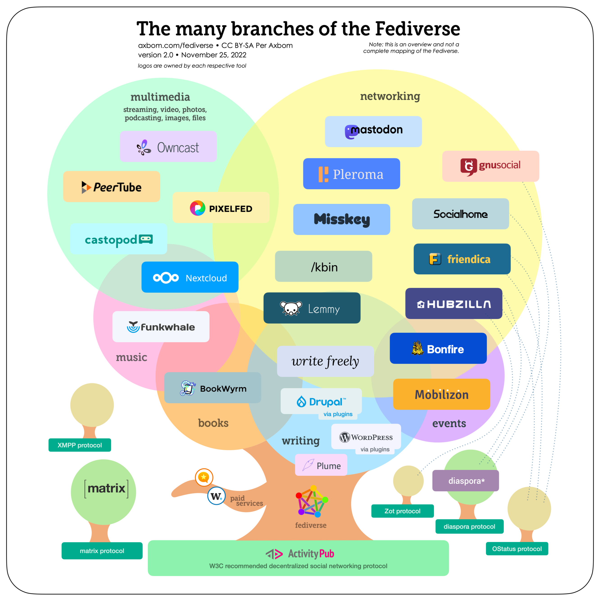

Det federerede internet (Fed IT) er et nybrud i måden, vi bruger internettet på.
I stedet for at alle skal registrere sig på nogle store, centrale platform styret af big tech-giganter, så er FED-IT en teknologi, der gør det muligt at starte små, bruger-nære platforme, som kommunikationen kan flyde frit imellem.
Princippet kender vi allerede fra e-mail, hvor man kan sende en mail uden at tænke på om modtageren har Gmail, Outlook, Protonmail eller noget fjerde. På samme måde gør FED-IT det muligt, at Anna starter en PixelFed med sine venner, hvor de deler billeder. Fordi platformen er i fediverset, kan hun automatisk dele det med sin kollega, der har en bruger på en Mastodon, og med hendes bror som laver videoer på PeerTube. Alt sammen uden at nogen af dem behøver at forlade deres egen platform.
FED-IT er et udtryk for decentrale, udvekslende og brugernære platforme, som fokuserer på sociale medier.
Hvis du er dansk bruger og ny til fediverset er et godt sted at starte på Mastodon, hvor du kan registrere dig på den store danske instans www.mstdn.dk.
Her skal du trykke "Create account" i menuen og acceptere de betingelser der er for brug af platformen.
Du kan også trykke her og læse om andre Mastodon-instanser >
Mastodon er en Twitter-lignende platform, der fokuserer på korte opslag. Der er dog også andre platforme, som fokuserer på billeder, events, video og flere.
Du kan trykke her og læse om de andre Fediverse-platforme >
Tryk her for at se alle registrerede instanser på tværs af platforme >
Når din registrering er færdig, har du fået et handle, der består af to dele – dit brugernavn og din instans – adskilt af et "@". Det er fx "@ditbrugernavn@mstdn.dk".
Når du møder en anden brugers 'handle', kan du slå det op ved at søge det frem i søgefeltet på din instans. Herefter kan du vælge at 'follow' en bruger, 'like' og 'dele' deres opslag, eller kommentere.
Du kan også søge hashtags frem gennem søgefeltet på din instans. Disse vil blive vist på tværs af instanser.
En hurtig måde at få et overblik over fediverset's platforme er gennem Per Axbom's træ:
Instans: Den hjemmeside, som en bruger er registreret hos, fx mstdn.dk
Handle: Det fulde brugernavn, som er en kombination af brugernavn og instans adskilt af "@" - fx @hej@fed-it.nu
Platform: Den type af tjeneste, som instansen kører - fx Mastodon, PixelFed, PeerTube, Friendica osv.